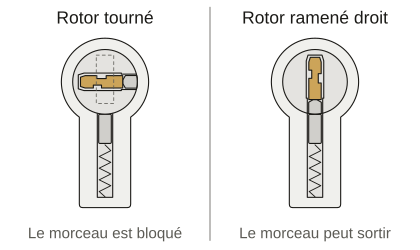
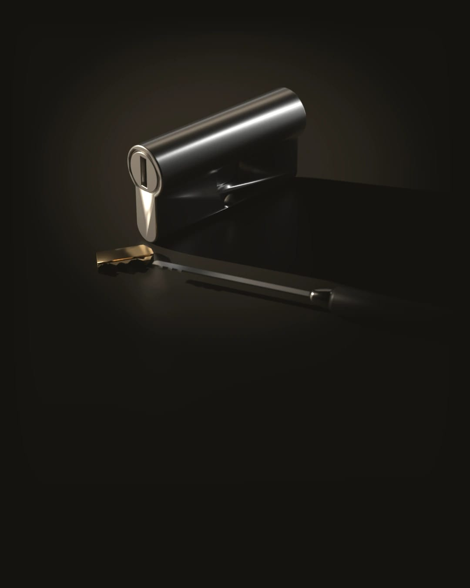
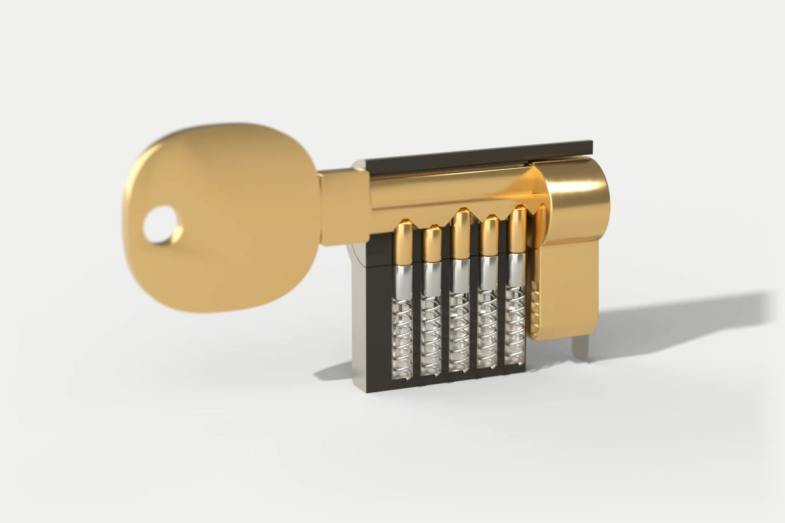

Clé cassée : on retire le morceau
On ne change le cylindre que si vous le décidez.
On décroche jour et nuit, tous les jours. De 21 h à 6 h, à partir de 95 € TTC. En journée :
À partir de 75 € TTC
Il est et on décroche. Prix de départ : Il est et on décroche. Prix de départ :Avant que le serrurier se mette en route, on vous dit par appel ou par SMS qui vient et le prix de départ.
Le morceau se retire à toute heure, mais le cylindre ne se change que si vous le décidez en lisant le devis.
Ce qu’il vaut mieux ne pas faire en attendant
Si une personne fragile ou un enfant est enfermé à l’intérieur sans pouvoir sortir seul, appelez d’abord le 18 ou le 112.
- Ne glissez ni pince ni double dans la serrure tant que le morceau y est.
- N’y mettez pas de colle, qui bloquerait le cylindre pour de bon.
- Gardez la tête de la clé. Elle porte souvent son numéro.
Comment se passe une extraction

Il regarde où la clé a cassé.
Un bout qui dépasse ne se retire pas comme un morceau enfoncé au fond.
Il vous remet le devis écrit.
L’extraction y figure. Le cylindre n’y est que s’il faut le changer.
Il retire le morceau avec ses outils d’extraction.
Puis il essaie le cylindre avec votre double si vous en avez un.
Le cylindre reste s’il tourne bien.
S’il est faussé, il vous le montre. Vous décidez de le changer tout de suite ou plus tard.
Il vous remet une facture détaillée.
Le morceau de clé vous revient si vous le voulez.
Pourquoi une clé casse dans un cylindre
La clé était souvent usée près de la tête. Ou bien le cylindre forçait depuis des semaines et on a tourné un soir un peu plus fort.
Faire reproduire une clé usée recopie aussi son usure. Partez d’une clé d’origine.



La nuit, si ça peut attendre
Si la clé a cassé porte ouverte et que vous fermez de l’intérieur, un rendez-vous en journée suffit.
Si vous êtes dehors ou si la porte ne ferme plus, appelez à toute heure. Entre 21 h et 6 h, l’extraction part de 95 € TTC.
Clé cassée : ce que vous vous demandez
Combien coûte l’extraction d’une clé cassée ?
À partir de 75 € TTC. Le prix exact dépend de l’endroit où la clé a cassé et de l’état du cylindre. Il figure sur le devis.
Si vous refusez ce devis, vous réglez le déplacement et le diagnostic : 75 € TTC le jour et 95 € TTC entre 21 h et 6 h.
Un SMS vous redit cette règle après l’appel.
Faut-il changer le cylindre après une extraction ?
Pas toujours. Il peut rester en place s’il tourne bien avec votre double une fois le morceau sorti.
Une clé qui a cassé parce que le cylindre forçait depuis longtemps annonce souvent un cylindre à changer.
Je n’ai pas de double : comment refaire une clé ?
Il faut souvent la carte de propriété remise à l’achat pour reproduire la clé d’un cylindre de sécurité. Cherchez-la avec vos papiers.
Si vous ne la trouvez pas ou si le cylindre est à changer, un cylindre neuf arrive avec ses propres clés.
L’assurance paie-t-elle une clé cassée ?
Ça dépend de votre contrat habitation. Certains couvrent la perte ou le vol des clés ou prévoient une assistance serrurerie.
D’autres ne prennent rien en charge pour une clé cassée. Posez la question à votre assureur et gardez la facture.

Clé cassée dans la serrure en ce moment
Dites-nous au téléphone dans quelle commune vous êtes, où la clé a cassé et si la porte est ouverte ou fermée.
Appeler